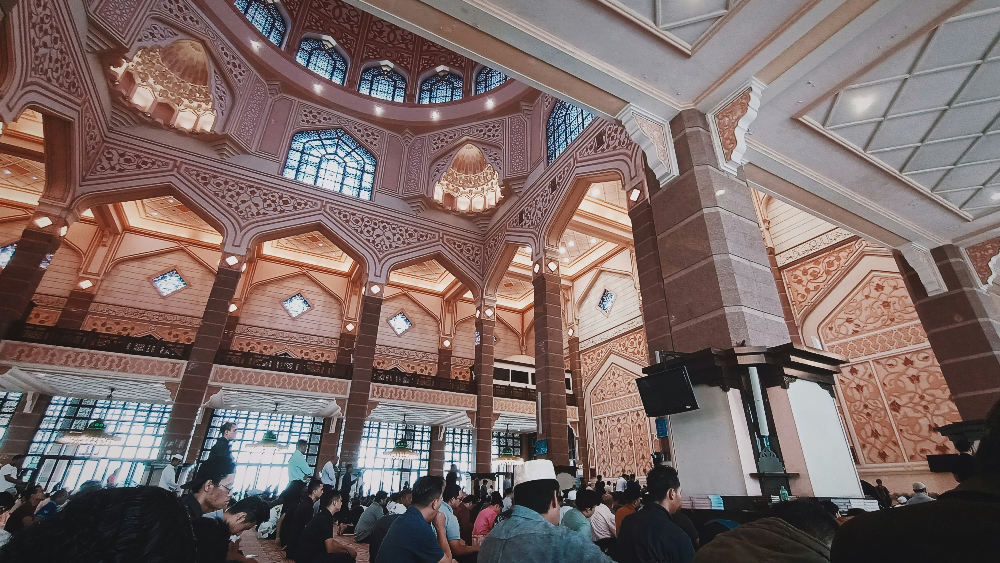

FITUR
SEMUA KENYAMANAN DALAM SATU TEMPAT

Imam Hafidz Al-Qur`an dan menguasai berbagai Nagham
Masjid dilengkapi AC, memastikan ruangan sejuk
Masjid terbuka 24 jam dengan keamanan terjamin
Menggunakan karpet berkualitas sehingga lembut dipakai sujud
KEGIATAN
BERBAGAI KEGIATAN MENARIK YANG ADA DI MASJID
Kajian Fiqih, Kajian Ibadah 4 Madzhab dan Belajar Ngaji
Di setiap harinya, masjid akan melaksanakan banyak kegiatan keislaman, terbuka untuk masyarakat sekitar dan untuk umum.
Kajian Fiqih, Kajian Ibadah 4 Madzhab dan Belajar Ngaji
Di setiap harinya, masjid akan melaksanakan banyak kegiatan keislaman, terbuka untuk masyarakat sekitar dan untuk umum.
Kajian Fiqih, Kajian Ibadah 4 Madzhab dan Belajar Ngaji
Di setiap harinya, masjid akan melaksanakan banyak kegiatan keislaman, terbuka untuk masyarakat sekitar dan untuk umum.